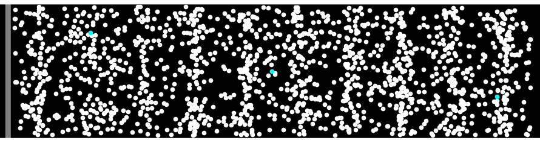
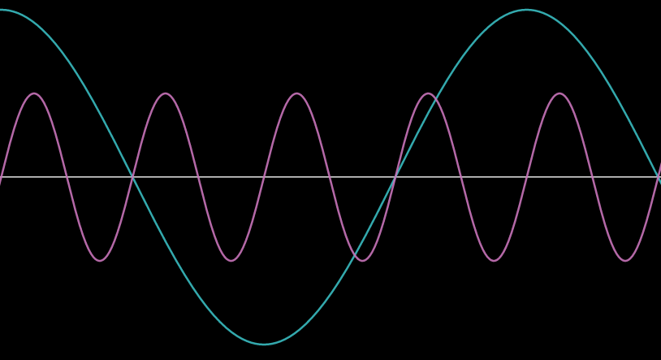

Making sounds using SDL and visualizing them on a simulated oscilloscope.
The most important part of Vectron is the real-time generation and visualization of audio. In the previous blog post I already built a simulated XY oscilloscope which I'll use to visualize the two stereo channels, and I'll use SDL for the platform-independent playback of the audio.
What is sound
To produce any sound on a digital computer, we first need to understand what sound is and how it is represented. In essence, sound is the collective vibration of particles. Our ears are made in such a way so as to sense these vibrations and convert them to electric signals that are then processed by our brains. A device that produces sound, like a speaker, does so by moving back and forth, transferring this motion to the air particles like a wave. It is this motion that our ears pick and can be naively visualized like in the image below.  The cyan particles are highlighted to show that, like in other types of waves, particles are not actually moving away from the sound source but oscillate around a fixed point. What you are actually perceiving as motion, above, is the motion of the denser areas, also known as wave fronts. Note that you can also see sparse areas moving in the opposite direction. Our eardrums work in a similar manner; the air particles push the eardrum inwards when they are moving in the direction of our ears while the eardrum, being elastic, oscillates back to its resting position when the velocity of the particles is small enough. Intuitively, you can probably see that the particle velocity is related to pressure; the larger the particle velocity when the particles reach the eardrum, the larger the pressure that is felt by the eardrum. Also, the larger the pressure, the louder the sound is perceived. Our ears can not only sense how loud a sound is, but they also sense frequency which we perceive as the pitch of a sound -- the faster the particle oscillations, the higher the frequency, and thus the pitch.
Sound in digital electronics
 I mentioned that the eardrum converts the sound waves into electrical signal and that a speaker works in a similar way. Indeed, by supplying the speaker with alternating current of a certain frequency and amplitude, we can generate sound with a certain pitch and level, like in the picture above where two sinusoidal signals are depicted, with the magenta one having higher pitch, and smaller level, and the cyan one having a lower pitch but higher level.
In analogue electronics the translation of sound into electrical signals is straightforward, but in digital electronics we only have 0s and 1s to represent the variation of sound over time, so we first have to 'digitize' sound. This is done by discretizing the signal into a fixed number of levels based on the number of bits we use. For example, an 8 bit sound can have 256 discrete levels. A computer then samples the current sound level with a fixed rate called the 'sampling rate', subsequently quantizes the level based on the number of bits, and this is then converted into an analogue signal to displace the cone of the speaker. The higher the level, the more the cone will be displaced, producing louder sounds. As you can imagine, if the sampling rate is too low, this will have an effect on how we perceive the sound. The most common audio sampling rate you'll see is 44.1kHz, or 44,100 samples per second. This is not an arbitrary number as humans can generally hear frequencies between 20Hz and 20kHz and the approximately double-rate is a requirement for perfect fidelity according to the Nyquist theorem.
Producing sound with SDL
Interfacing with an audio device in SDL is quite straightforward. An audio device can be 'opened' using the SDL_OpenAudioDevice call:
SDL_AudioDeviceID SDL_OpenAudioDevice( const char *device, int iscapture, const SDL_AudioSpec *desired, SDL_AudioSpec *obtained, int allowed_changes );
Setting device = NULL will give us back the most 'reasonable' default device. With the SDL_AudioSpec* desired argument we can specify the desired audio playback characteristics, like the frequency, format, number of channels, etc. Note that although computers are quite accurate, they cannot sample the sound consistently enough at the rates that are required, and thus in practice a buffer is introduced when interfacing between the software and the audio device. The size of the buffer can also be set in the desired SDL_AudioSpec, along with an audio callback function which is responsible for filling the buffer.
To make this all clear, let's build a small 'hello audio' program where we play a simple sinusoidal tone. Let's first write the main function:
#include <cstdint> #include <SDL2/SDL.h> int main(int argc, char* argv[]) { uint64_t samples_played = 0; if(SDL_Init(SDL_INIT_AUDIO) < 0) { fprintf(stderr, "Error initializing SDL. SDL_Error: %s\n", SDL_GetError() ); return -1; } SDL_AudioSpec audio_spec_want, audio_spec; SDL_memset(&audio_spec_want, 0, sizeof(audio_spec_want)); audio_spec_want.freq = 44100; audio_spec_want.format = AUDIO_F32; audio_spec_want.channels = 2; audio_spec_want.samples = 512; audio_spec_want.callback = audio_callback; audio_spec_want.userdata = (void*)&samples_played; SDL_AudioDeviceID audio_device_id = SDL_OpenAudioDevice( NULL, 0, &audio_spec_want, &audio_spec, SDL_AUDIO_ALLOW_FORMAT_CHANGE ); if(!audio_device_id) { fprintf(stderr, "Error creating SDL audio device. SDL_Error: %s\n", SDL_GetError() ); SDL_Quit(); return -1; } return 0; }
which opens an audio device with a sampling rate of 44.1kHz and a buffer size of 512 samples. We use a 32-bit float representation for the audio, which allows us to represent audio as a floating point number between -1 and 1.
Next we implement the callback for filling the buffer:
void audio_callback(void* userdata, uint8_t* stream, int len) { uint64_t* samples_played = (uint64_t*)userdata; float* fstream = (float*)(stream); static const float volume = 0.2; static const float frequency = 200.0; for(int sid = 0; sid < (len / 8); ++sid) { double time = (*samples_played + sid) / 44100.0; double x = 2.0 * M_PI * time * frequency; fstream[2 * sid + 0] = volume * sin(x); /* L */ fstream[2 * sid + 1] = volume * sin(x); /* R */ } *samples_played += (len / 8); }
Here using samples_played we keep track of the progress in the audio playback so that we can sample at the appropriate times of our sinusoidal signal. Note that we divide len / 8, by the size of a single sample in bytes; because we chose for a 32-bit format with 2 channels, that's 4 bytes per channel.
Finally, we create a window and a basic loop capturing window events so that we can close our program.
int window_width = 600; int window_height = 600; SDL_Window* window; { window = SDL_CreateWindow( "SDL Tone Generator", SDL_WINDOWPOS_UNDEFINED, SDL_WINDOWPOS_UNDEFINED, window_width, window_height, SDL_WINDOW_SHOWN | SDL_WINDOW_RESIZABLE ); if(!window) { fprintf(stderr, "Error creating SDL window. SDL_Error: %s\n", SDL_GetError() ); SDL_Quit(); return -1; } } SDL_PauseAudioDevice(audio_device_id, 0); bool running = true; while(running) { // Process input SDL_Event sdl_event; while(SDL_PollEvent(&sdl_event) != 0) { if(sdl_event.type == SDL_QUIT) running = false; } } SDL_DestroyWindow(window); SDL_CloseAudioDevice(audio_device_id); SDL_Quit();
With this we now have a very simple tone generator using SDL. You can find the code here. You can play with the volume and frequency as well as the function. Can you generate a square wave or a sawtooth wave?
If you want to learn more about software sound synthesis, please take a look at this very good series of video tutorials here.
Visualizing sound with an oscilloscope
Now that we have a basic tone generator, we want to connect the output of the two channels into the X and Y inputs of our simulated oscillator I introduced previously. Now the problem we need to solve is that due to the fact that the GPU and audio update at different intervals, we need some way to synchronize them. For this, we either need to introduce a third entity that orchestrates the updating of the state, or we can make either the audio or the graphics the lead. All options are equally viable, but I chose to make the graphics be the main driver. What I means is that on every frame, the beam position is updated according to the frame duration, and then information about the beam are added to a buffer which is passed to the audio callback to generate sound. This is of course more complicated than it sounds; what happens if either the graphics or the audio thread takes too much time, or how do we actually exchange data between the audio and graphics threads without introducing any waiting or explicit synchronization? The answer I came up with, and which is often used in such situations is known as a ring buffer.
 A ring buffer is basically an array that wraps around itself -- it has no beginning and no end, but has a finite size. With the ring buffer, we also define two pointers, a read pointer and a write pointer which specify the positions in the ring buffer where the next read or write operations should be performed. For our use case, we store the simulated beam points of each frame in a single entry of the ring buffer. The audio callback then reads data from these entries according to the number of samples it needs to supply to the audio device. Note that it does not read a single entry of the ring buffer but can instead start reading anywhere in the current read pointer (based on where it stopped reading on the previous call) and it can even read multiple entries depending on the number of samples it needs to fill the audio buffer with.
As mentioned, the ring buffer consists of an array of a certain size, along with a read and write pointer:
#define BEAM_RB_SIZE 10 struct BeamRingBuffer { BeamData beam_data[BEAM_RB_SIZE]; uint8_t write_id; uint8_t read_id; };
where we hard-coded the buffer size to BEAM_RB_SIZE = 10, and BeamData is then defined as,
struct BeamData { size_t num_points; double* points; double dt; };
which contains the frame duration, dt, the number of points simulated for that frame, num_points, as well as the points as an array of xy points. Every frame, BeamData is filled and written to the BeamRingBuffer at position write_id, and write_id is then incremented. The audio callback is now quite a bit more complicated:
struct Audio { SDL_AudioDeviceID audio_device_id; BeamRingBuffer beam_buffer; double time_processed; uint8_t volume; }; void audio_callback(void* userdata, uint8_t* stream, int len) { memset(stream, 0, len); Audio* audio = (Audio*) userdata; BeamRingBuffer& beam_buffer = audio->beam_buffer; double volume = audio->volume / 255.0; float* fstream = (float*)(stream); const BeamData* current_data = &beam_buffer.beam_data[beam_buffer.read_id]; for(int sid = 0; sid < (len / 8);) { if(!current_data->points) break; double t = audio->time_processed + sid / 44100.0; if(t < current_data->num_points * current_data->dt) { // if time is within the timeframe defined by the // current_data points. size_t pid = t / current_data->dt; double f = (t - current_data->dt * pid) / current_data->dt; fstream[2 * sid + 0] = volume * ( (1.0 - f) * current_data->points[2 * pid + 0] + f * current_data->points[2 * pid + 2] ); /* L */ fstream[2 * sid + 1] = volume * ( (1.0 - f) * current_data->points[2 * pid + 1] + f * current_data->points[2 * pid + 3] ); /* R */ ++sid; } else { // Otherwise, we should move the beam buffer to the // next data. size_t new_read_id = (beam_buffer.read_id + 1) % BEAM_RB_SIZE; double new_time_processed = audio->time_processed - current_data->num_points * current_data->dt; beam_buffer.read_id = new_read_id; audio->time_processed = new_time_processed; // @note: workaround for when the audio thread (consumer) // catches up with the graphics thread (producer). if(new_read_id == beam_buffer.write_id) { audio->time_processed += sid / 44100.0; return; } current_data = &beam_buffer.beam_data[new_read_id]; } } audio->time_processed += (len / 8) / 44100.0; }
The basic idea is the same, we fill the audio buffer with the required amount of data, but the data is acquired from the ring buffer by reading from position read_id. This is incremented if we progress beyond the current frame's end. Note that we also keep track of the time that we have processed in the current frame and is also updated as we move from one frame in the ring buffer to another. Moreover, to make the audio sound better, we linearly interpolate (lerp) between beam points based on the audio sample time, which is encoded in the factor f above. To greatly simplify lerping across frame boundaries, we copy the last point in the BeamData of the last frame in the new frame's BeamData.
Finally, the sound generator is defined as a simple function taking as argument time and returning the beam coordinates or the audio levels, depending on how you look at it:
void sinusoidal_tone_generator(double t, double* x, double* y) { static const double frequency = 200.0; static const double radius = 0.8; double u = frequency * 2.0 * M_PI * t; double radius_ramp = t > 1.0? 1.0: t*t*t; *x = radius * radius_ramp * cos(u); *y = radius * radius_ramp * sin(u); }
The current implementation of the code, which you can find here, has an issue which I have ignored, namely when the application is first launched, the audio and graphics threads are close too each other which leads to slight crackling noises. This is quickly remedied as the audio thread is made to wait in such situations. To minimize the effect I added a ramp of the volume/radius of the generated tone. This results in a circle which grows as \(t^3\).
Conclusion
Audio programming is something I don't usually get to play with a lot. Vectron, being a audio-driven game, allowed me to explore audio synthesis and solve interesting problems. As I'll show in a future blog post, I designed a system for synthesizing new signals from just a few basic elements and also a sequencer which I used to design the levels. I urge you to also explore sound programming by experimenting with the two repositories I created for this blog post:
If you liked reading this blog post, please considering supporting me by buying my game, Vectron, from itch.io: